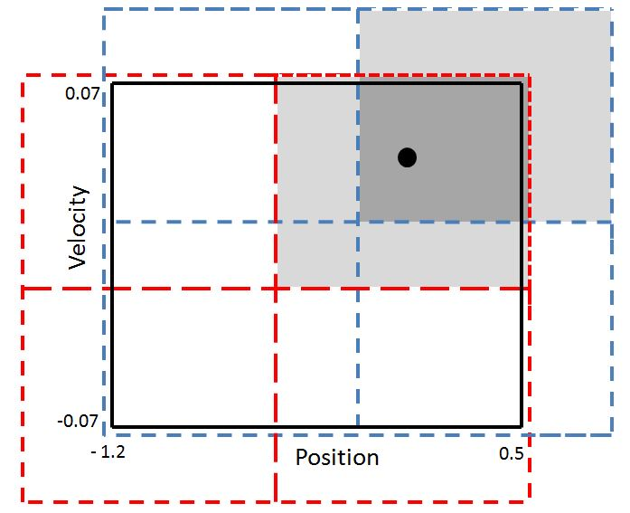

This vignette explains the reinforcement learning algorithms implemented in reinforcelearn. For details of how to create an environment have a look at the How to create an environment? vignette.
library(reinforcelearn)
set.seed(123)Q(sigma), Q-Learning, Expected Sarsa and Sarsa build a family of reinforcement learning algorithms, which can be used to find the optimal action value function using the principle of generalized policy iteration.
In reinforcelearn you can use the qlearning, sarsa, expectedSarsa and qSigma functions. In the following we will train on a simple gridworld navigation task. The first argument of these algorithms is called envir, where the environment can be specified. The number of episodes can be specified via n.episodes.
# Windy gridworld environment
env = makeGridworld(shape = c(4, 4), goal.states = 15, initial.state = 0)
res = qlearning(env, n.episodes = 20)
# Note: to find a good policy we need to run more episodes.These functions return the action value function \(Q\) (here a matrix).
print(res$Q)
#> NULLWe can then find a policy by acting greedily with respect to the action value function.
# Values of each grid cell
state.values = matrix(apply(res$Q1, 1, max), ncol = 4, byrow = TRUE)
print(round(state.values, 1))
#> [,1] [,2] [,3] [,4]
#> [1,] -1.7 -1.4 -1.1 -1.0
#> [2,] -1.4 -1.2 -1.1 -0.9
#> [3,] -1.1 -1.1 -0.9 -0.7
#> [4,] -1.0 -0.9 -0.6 0.0
# Policy: Subtract 1 to be consistent with action numeration in env
policy = max.col(res$Q1) - 1
print(matrix(policy, ncol = 4, byrow = TRUE))
#> [,1] [,2] [,3] [,4]
#> [1,] 3 1 0 0
#> [2,] 1 2 2 0
#> [3,] 2 0 3 0
#> [4,] 3 0 1 1They also return some statistics about learning behavior, e.g. the number of steps and returns per episode.
print(res$steps)
#> [1] 91 20 75 25 22 42 61 12 89 10 18 10 32 37 61 10 26 22 16 22Expected Sarsa can be used as an on-policy or an off-policy algorithm depending on the target.policy argument, which can be "greedy" or "egreedy" for \(\epsilon\)-greedy.
# This is equivalent to qlearning(env):
res = expectedSarsa(env, target.policy = "greedy", n.episodes = 20)
# Expected Sarsa with an epsilon-greedy target policy:
res = expectedSarsa(env, target.policy = "egreedy", n.episodes = 20)The Q(\(\sigma\)) algorithm (Asis et al. 2017) generalizes Sarsa, Expected Sarsa and Q-Learning. Its parameter \(\sigma\) controls a weighting between Sarsa and Expected Sarsa. Q(1) is equal to Sarsa and Q(0) to Expected Sarsa.
res = qSigma(env, sigma = 0.5, n.episodes = 20)
# This is equivalent to Sarsa:
res = qSigma(env, sigma = 1, n.episodes = 20)
# This is equivalent to Q-Learning:
res = qSigma(env, sigma = 0, target.policy = "greedy", n.episodes = 20)The hyperparameters of the algorithms can be specified as arguments, e.g. the discount factor \(\gamma\) via discount, the learning rate \(\alpha\) via learning.rate and the exploration factor \(\epsilon\) via the epsilon argument. These parameters can also be adjusted over time by specifying an update function, e.g. updateEpsilon. The update function takes two arguments, the old value of the parameter and the number of episodes finished. It returns the updated parameter, e.g. a decreased learning rate. The update functions are called after each episode is finished.
res = qlearning(env, epsilon = 0.2, learning.rate = 0.5,
discount = 0.99, n.episodes = 20)
# Decay epsilon over time. Every 10 episodes epsilon will be halfed.
decayEpsilon = function(epsilon, i) {
if (i %% 10 == 0) {
epsilon = epsilon * 0.5
}
epsilon
}
res = qlearning(env, epsilon = 0.5, n.episodes = 20,
updateEpsilon = decayEpsilon)The action value function will be initialized to 0. But you can also pass on an initial value function via the initial.value argument.
Q = matrix(100, nrow = env$n.states, ncol = env$n.actions)
res = qlearning(env, n.episodes = 5, initial.value = Q)
# After 5 episodes the Q values will still be similar to 100.
print(matrix(round(apply(res$Q1, 1, max), 1), ncol = 10, byrow = TRUE))
#> Warning in matrix(round(apply(res$Q1, 1, max), 1), ncol = 10, byrow =
#> TRUE): Datenlänge [16] ist kein Teiler oder Vielfaches der Anzahl der
#> Spalten [10]
#> [,1] [,2] [,3] [,4] [,5] [,6] [,7] [,8] [,9] [,10]
#> [1,] 99.4 99.6 99.7 99.7 99.6 99.7 99.8 99.8 99.7 99.7
#> [2,] 99.8 99.9 99.8 99.8 99.8 100.0 99.4 99.6 99.7 99.7So far the value function has been represented as a table (number of states x number of actions). In many interesting problems there are lots of states and actions or the space is continuous. Then it is inpractical to store a tabular value function and to slow to update state-action pairs individually. The solution is to approximate the value function with a function approximator, e.g. a linear combination of features.
In the following we will have a look at the mountain car problem, where the goal is to drive an underpowered car up a steep hill. The state space is continuous in two dimensions, the position and velocity of the car, each bounded in some interval. There are three different actions: push back (0), do nothing (1) and push forward (2).
env = mountainCar()
print(env$state.space)
#> [1] "Box"
print(env$state.space.bounds)
#> [[1]]
#> [1] -1.2 0.5
#>
#> [[2]]
#> [1] -0.07 0.07
env$reset()
print(env$state)
#> [,1] [,2]
#> [1,] -0.4538761 0We will solve this environment using linear function approximation. With linear function approximation the action value function is represented as
\[ \hat{q}(S_t, A_t, w) = x(S_t)^T w = \sum_{j=1}^{n} x_j(S_t) \, w_j \]
and updated by gradient descent. There is a distinct weight vector per action.
The raw state observation returned from the environment must be preprocessed using the preprocessState argument. This function takes the state observation as input and returns a preprocessed state which can be directly used by the function approximator. To use a tabular value function preprocessState must return an integer value between [0, number of states - 1]. For linear function approximation the output of preprocessState must be a matrix with one row. For a neural network you have to make sure that the dimensions of the preprocessed state and the neural network match, so that model$predict(preprocessState(envir$state)) works.
But how to get a good feature vector from the state observation? One idea is to use grid tiling (Sutton and Barto 2017) to aggregate the state space. Each tiling is a grid which overlays the state space. A state observation then falls into one tile per tiling and we will use as many weights as there are tiles. The feature vector is then just a one-hot vector of all active tiles.

We can define a function, which takes the original state observation as an input and returns a preprocessed state observation.
# Define preprocessing function (we use grid tiling)
n.tilings = 8
max.size = 4096
iht = IHT(max.size)
position.max = env$state.space.bounds[[1]][2]
position.min = env$state.space.bounds[[1]][1]
velocity.max = env$state.space.bounds[[2]][2]
velocity.min = env$state.space.bounds[[2]][1]
position.scale = n.tilings / (position.max - position.min)
velocity.scale = n.tilings / (velocity.max - velocity.min)
# Scale state first, then get active tiles and return n hot vector
gridTiling = function(state) {
state = c(position.scale * state[1], velocity.scale * state[2])
active.tiles = tiles(iht, 8, state)
makeNHot(active.tiles, max.size, out = "vector")
}We can then pass this function to the preprocessState argument in qlearning. Via the fun.approx argument we tell the algorithm to use a linear combination of features to approximate the value function. Currently fun.approx supports table, linear and neural.network.
res = qlearning(env, fun.approx = "linear", preprocessState = gridTiling, n.episodes = 20)
print(res$steps)
#> [1] 1315 838 584 529 369 322 242 233 302 272 235 277 238 200
#> [15] 278 244 299 163 240 191To use a neural network you have to specify a keras model. Here is an example:
env = makeGridworld(c(4, 4), goal.states = 15, initial.state = 0)
# Use a neural network as function approximator
makeOneHot = function(state) {
one.hot = matrix(rep(0, env$n.states), nrow = 1)
one.hot[1, state + 1] = 1
one.hot
}
# Define keras model
library(keras)
model = keras_model_sequential()
model %>% layer_dense(units = env$n.actions, activation = 'linear', input_shape = c(env$n.states))
res = qSigma(env, fun.approx = "neural.network", model = model,
preprocessState = makeOneHot, n.episodes = 20)Note that neural network training can be slow because at each step the Keras API is called.
There are several extensions of the algorithms, which can improve learning behavior.
Eligibility traces assign credit for the error back to all previously visited states and actions (Sutton and Barto 2017). The trace decay parameter \(\lambda\) and the type of the eligibility trace can be specified as arguments.
If eligibility.type = 1 a replacing trace is used, if eligibility.type = 0 an accumulating trace (Singh and Sutton 1996). Intermediate values are also possible.
env = makeGridworld(c(4, 4), goal.states = 15, initial.state = 0)
# Sarsa with replacing traces
res = sarsa(env, lambda = 0.9, eligibility.type = 1, n.episodes = 20)
print(res$steps)
#> [1] 67 25 28 34 13 20 46 28 13 39 18 8 12 10 13 14 18 18 10 20The idea of double learning (Hasselt 2010) is to decouple action selection and action evaluation.
To use Double Learning with qSigma, qlearning, sarsa and expectedSarsa just pass double.learning = TRUE to the algorithm.
res = expectedSarsa(env, double.learning = TRUE, n.episodes = 20)
print(res$steps)
#> [1] 78 8 46 60 54 30 54 53 42 60 42 30 22 18 48 77 28 24 44 12When using function approximation in reinforcement learning training can be instable because subsequent state observations are often highly correlated and we train on these states the order they are experienced. Experience replay (Mnih et al. 2013) is a simple idea to break these correlations and stabilize learning. Instead of training on a simple observation at each time step the algorithm trains now on more than one observation sampled randomly from a replay memory, which stores all previously visited states and actions. Because the observations are trained on in a random order correlations are much smaller .
In reinforcelearn experience replay can be used by passing on a list of experiences to the replay.memory argument. Each list entry is itself a list with the entries state, action, reward and next.state. state and next.state should have been preprocessed, e.g. by calling preprocessState(state). A different possibility is to specify the replay.memory.size argument, which will then be initialized with experiences generated by a random policy. The number of experiences trained on at each step is controled via the batch.size argument.
When experiencing a new transition the algorithm replaces the oldest entry in the replay memory by the new transition.
# Fill a replay memory of size 100 on the gridworld task.
memory = vector("list", length = 100)
env$reset()
for (i in 1:100) {
if (env$done) {
env$reset()
}
action = sample(env$actions, size = 1)
env$step(action)
memory[[i]] = list(state = env$previous.state, action = action,
reward = env$reward, next.state = env$state)
}
print(memory[[1]])
#> $state
#> [1] 0
#>
#> $action
#> [1] 0
#>
#> $reward
#> [1] -1
#>
#> $next.state
#> [1] 0
# Pass on replay memory.
res = sarsa(env, replay.memory = memory, batch.size = 32, n.episodes = 20)
# Specify replay memory size, replay memory will be filled internally.
res = sarsa(env, replay.memory.size = 100, batch.size = 32, n.episodes = 20)
print(res$steps)
#> [1] 32 52 19 19 19 14 6 6 14 11 6 6 13 6 6 10 6 8 6 6As a default experiences will be randomly sampled from the replay memory. A prioritized experience replay prioritizes experiences with a high error (Schaul et al. 2015).
When \(\alpha = 0\) (the default) experiences are sampled with equal probability else experiences with a high error have a higher probability of being sampled. To each priority a small positive constant \(\theta\) is added to prevent that experiences with an error of 0 are never replayed.
# Prioritized experience replay
res = sarsa(env, replay.memory.size = 100, batch.size = 32,
n.episodes = 20, alpha = 0.5, theta = 0.01)
print(res$steps)
#> [1] 63 36 29 22 29 11 6 6 6 6 7 7 15 10 6 6 11 6 10 6There are other algorithms implemented in the package which will be described in the following.
The TD(lambda) algorithm is used to evaluate a fixed policy. In reinforcelearn td can be used with a tabular or linear function approximation and with eligibility traces.
td takes a policy argument, which is the policy to evaluate. In the tabular case this is just a matrix (number of states x number of actions) with the probabilities of each action given a state. For the linear function approximation policy must be a function, which returns an action given a preprocessed state observation. You can specify a maximal number of steps or episodes, so td can be used with both continuing and episodic environments.
Here we will solve a random walk task (Sutton and Barto 2017, Example 6.2).
# Random Walk Task (Sutton & Barto Example 6.2)
P = array(dim = c(7, 7, 2))
P[, , 1] = matrix(c(rep(c(1, rep(0, 6)), 2), c(0, 1, rep(0, 5)),
c(0, 0, 1, rep(0, 4)), c(rep(0, 3), 1, rep(0, 3)), c(rep(0, 4), 1, rep(0, 2)),
c(rep(0, 6), 1)), ncol = 7, byrow = TRUE)
P[, , 2] = matrix(c(c(1, rep(0, 6)), c(0, 0, 1, rep(0, 4)),
c(rep(0, 3), 1, rep(0, 3)), c(rep(0, 4), 1, rep(0, 2)),
c(rep(0, 5), 1, 0), c(rep(0, 6), 1), c(rep(0, 6), 1)), ncol = 7, byrow = TRUE)
R = matrix(c(rep(0, 12), 1, 0), ncol = 2)
env = makeEnvironment(transitions = P, rewards = R, initial.state = 3)
# Uniform random policy
random.policy = matrix(1 / env$n.actions, nrow = env$n.states,
ncol = env$n.actions)
# Estimate state value function with TD(0)
res = td(env, random.policy, n.episodes = 20, lambda = 0.5)
print(res$V)
#> [1] 0.00000000 0.01281662 0.04908379 0.26979868 0.43058114 0.61169674
#> [7] 0.00000000Dynamic programming (Sutton and Barto 2017) is a class of solution methods solving a MDP not by interaction but by iterative computations using the state transition array and reward matrix. It can therefore only be applied when the model of the MDP is known.
In R we can evaluate a policy with dynamic programming with the following code:
# Set up gridworld problem
env = gridworld()
# Define uniform random policy, take each action with equal probability
random.policy = matrix(1 / env$n.actions, nrow = env$n.states,
ncol = env$n.actions)
# Evaluate this policy
res = evaluatePolicy(env, random.policy, precision = 0.01)
print(round(matrix(res$v, ncol = 4, byrow = TRUE)))
#> [,1] [,2] [,3] [,4]
#> [1,] 0 -14 -20 -22
#> [2,] -14 -18 -20 -20
#> [3,] -20 -20 -18 -14
#> [4,] -22 -20 -14 0In theory it converges to the true values, but in practise we have to stop iteration before that. You can either specify a maximal number of iterations via the n.iter argument or a precision term, then the evaluation stops if the change in two subsequent values is less than precision for every state. You can specify an initial value function via the v argument. Note that the values of all terminal states must be 0 else the algorithm does not work.
Policy iteration tries to find the best policy in the MDP by iterating between evaluating and improving a policy.
# Find optimal policy using Policy Iteration
res = iteratePolicy(env)
print(round(matrix(res$v, ncol = 4, byrow = TRUE)))
#> [,1] [,2] [,3] [,4]
#> [1,] 0 -1 -2 -3
#> [2,] -1 -2 -3 -2
#> [3,] -2 -3 -2 -1
#> [4,] -3 -2 -1 0You can specify an initial policy else the initial policy will be the uniform random policy.
iteratePolicy stops if the policy does not change in two subsequent iterations or if the specified number of iterations is exhausted. For the policy evaluation step in policy iteration the same stop criteria as in evaluatePolicy are applied via the precision.eval and n.iter.eval can be passed on.
Value iteration evaluates each policy only once and then immediately improves the policy by acting greedily.
# Find optimal policy using Value Iteration
res = iterateValue(env, n.iter = 100)
print(res$policy)
#> [,1] [,2] [,3] [,4]
#> [1,] 1 0 0 0
#> [2,] 1 0 0 0
#> [3,] 1 0 0 0
#> [4,] 1 0 0 0
#> [5,] 0 0 1 0
#> [6,] 1 0 0 0
#> [7,] 1 0 0 0
#> [8,] 0 0 0 1
#> [9,] 0 0 1 0
#> [10,] 1 0 0 0
#> [11,] 0 1 0 0
#> [12,] 0 0 0 1
#> [13,] 0 1 0 0
#> [14,] 0 1 0 0
#> [15,] 0 1 0 0
#> [16,] 1 0 0 0iterateValue runs until the improvement in the value function in two subsequent steps is smaller than the given precision in all states or if the specified number of iterations is exhausted.
evaluatePolicy, iteratePolicy and iterateValue return a list with state value function, action value function and policy.
An actor critic is a policy-based reinforcement learning algorithm, which parametrizes value function and policy (Sutton and Barto 2017). In reinforcelearn a simple advantage actor critic is implemented, which uses the td error of the state value function as a critic.
The policy can be a softmax policy for discrete actions or a gaussian policy for a continuous action space.
There are now two learning rates \(\alpha\) and \(\beta\), one for the critic and one for the actor.
env = mountainCar()
# Linear function approximation and softmax policy
res = actorCritic(env, fun.approx = "linear",
preprocessState = gridTiling, n.episodes = 20)
print(res$steps)
#> [1] 1034 1087 303 170 233 310 236 230 262 237 167 215 237 232
#> [15] 148 234 181 154 180 156With a gaussian policy we can also solve problems with a continuous action space.
Here we will solve a continuous version of the mountain car problem, where the action is a real number.
# Mountain Car with continuous action space
env = mountainCar(action.space = "Continuous")
# Linear function approximation and gaussian policy
set.seed(123)
res = actorCritic(env, fun.approx = "linear", policy = "gaussian",
preprocessState = gridTiling, n.episodes = 20)
print(res$steps)
#> [1] 780 319 317 157 149 194 153 132 106 151 106 136 110 98 96 101 144
#> [18] 96 103 165The actor critic can be used with eligibility traces, then there are separate eligibility traces for the policy parameters and the value function parameters, which can be decayed by a different factor \(\lambda\).
# Cliff walking environment
rewardFun = function(state, action, n.state) {
if (n.state %in% 37:46) {
return(- 100)
} else {
return(- 1)
}
}
env = makeGridworld(shape = c(4, 12), goal.states = 47,
cliff.states = 37:46, reward.step = - 1, reward.cliff = - 100,
cliff.transition.done = TRUE, initial.state = 36, sampleReward = rewardFun)
res = actorCritic(env, n.episodes = 20, lambda.actor = 0.5, lambda.critic = 0.8)
print(res$returns)
#> [1] -100 -103 -162 -148 -113 -179 -119 -124 -191 -104 -143 -100 -142 -108
#> [15] -149 -127 -172 -221 -158 -145There are also solution methods for simple multi-armed bandit problems.
In the following we will consider an example bandit with four different actions. For each action the reward will be sampled from a probability distribution. The reward of the first action is sampled from a normal distribution with mean 1 and standard deviation 1, the second action from a normal distribution with mean 2 and standard deviation 4, the third action from a uniform distribution with minimum 0 and maximum 5 and the fourth action from an exponential distribution with rate parameter 0.25. Therefore the fourth action is the best with an expected reward of 4.
To solve this bandit problem we need to specify the reward function,
# Define reward function
rewardFun = function(action) {
if (action == 0) {
reward = rnorm(1, mean = 1, sd = 1)
}
if (action == 1) {
reward = rnorm(1, mean = 2, sd = 4)
}
if (action == 2) {
reward = runif(1, min = 0, max = 5)
}
if (action == 3) {
reward = rexp(1, rate = 0.25)
}
reward
}To solve the bandit, i.e. to find out, which action returns the highest reward, we can use the bandit function. There are several different action selection methods implemented, e.g. greedy, epsilon-greedy, UCB and gradient-bandit.
# Greedy action selection.
bandit(rewardFun, n.actions = 4, n.episodes = 1000,
action.selection = "greedy")
#> [1] -0.1976585 -1.3866575 2.1102407 3.9465064
# Epsilon-greedy action selection.
bandit(rewardFun, n.actions = 4, n.episodes = 1000,
action.selection = "egreedy", epsilon = 0.2)
#> [1] 1.032849 1.929346 2.711898 4.041045
# Upper-confidence bound action selection.
bandit(rewardFun, n.actions = 4, n.episodes = 1000,
action.selection = "UCB", C = 2)
#> [1] 0.4598108 1.1766058 2.4985695 1.4298745
# Gradient-bandit algorithm.
bandit(rewardFun, n.actions = 4, n.episodes = 10000,
action.selection = "gradientbandit", alpha = 0.1)
#> [1] 5.379818e-05 3.348153e-05 2.775565e-04 9.996352e-01In the bandit function we can specify the argument initial.value which sets all Q values initially to this number. Additionally we can assign a confidence to this initial value via the initial.visits argument. A value of 10 for example means that the algorithm has already seen 10 rewards for each action with an average value of initial.value.
# Greedy action selection with optimistic initial values.
bandit(rewardFun, n.actions = 4, n.episodes = 1000,
action.selection = "greedy",
initial.value = 5, initial.visits = 100)
#> [1] 3.987659 3.984982 3.988113 4.005252Have a look at the other vignettes:
Asis, Kristopher De, J. Fernando Hernandez-Garcia, G. Zacharias Holland, and Richard S. Sutton. 2017. “Multi-Step Reinforcement Learning: A Unifying Algorithm.” CoRR abs/1703.01327. http://arxiv.org/abs/1703.01327.
Hasselt, Hado V. 2010. “Double Q-Learning.” In Advances in Neural Information Processing Systems 23, edited by J. D. Lafferty, C. K. I. Williams, J. Shawe-Taylor, R. S. Zemel, and A. Culotta, 2613–21. Curran Associates, Inc. http://papers.nips.cc/paper/3964-double-q-learning.pdf.
Mnih, Volodymyr, Koray Kavukcuoglu, David Silver, Alex Graves, Ioannis Antonoglou, Daan Wierstra, and Martin A. Riedmiller. 2013. “Playing Atari with Deep Reinforcement Learning.” CoRR abs/1312.5602. http://arxiv.org/abs/1312.5602.
Schaul, Tom, John Quan, Ioannis Antonoglou, and David Silver. 2015. “Prioritized Experience Replay.” CoRR abs/1511.05952. http://arxiv.org/abs/1511.05952.
Singh, Satinder P., and Richard S. Sutton. 1996. “Reinforcement Learning with Replacing Eligibility Traces.” Machine Learning 22 (1): 123–58. doi:10.1007/BF00114726.
Sutton, Richard S., and Andrew G. Barto. 2017. “Reinforcement Learning : An Introduction.” Cambridge, MA, USA: http://incompleteideas.net/sutton/book/the-book-2nd.html; MIT Press.